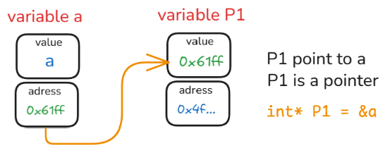

Pointers & memory
Every variable has a value and a memory address. A pointer is simply a variable whose value is an address. Once that clicks, linked lists and trees stop being mysterious — they are all built out of this one idea.

A pointer is a variable whose value is another variable's address.
Declaring and dereferencing
Three symbols do all the work: * in a declaration makes a pointer type, & takes an address, and * in an expression follows a pointer back to the value.
Click to expand — declaration, address-of, dereferencing
Declaration
A pointer must name the type it points to — the compiler needs that to know how many bytes to read, and how far to jump in pointer arithmetic.
int* p; // pointer to an int
double* d; // pointer to a double
char* c; // pointer to a charint* p; and int *p; are identical — the position of * is only a style choice. But int* a, b; declares one pointer and one plain int. Declare one per line and the trap disappears.
Address-of operator
The & operator returns the memory address of a variable.
int a = 10;
cout << &a; // e.g. 0x61ff — where a lives
int* p = &a; // p now stores that addressDereferencing
Used on a pointer, * gives the value stored at that address.
int a = 10;
int* p = &a;
cout << *p; // 10 — the value p points to
cout << p; // 0x61ff — the address of a
cout << &p; // 0x7ffd — the address of p itselfFollowing the arrow is dereferencing; p itself is just the address.
Writing through a pointer
Dereferencing also works on the left of an assignment, which is the whole point — it lets you change memory you have no name for.
*p = 99;
cout << a; // 99 — a changed, without touching `a`Null pointers
A pointer that doesn't point anywhere should be set to nullptr. Dereferencing it crashes the program — which sounds bad but is the good case, because it fails loudly and immediately.
Click to expand
int* ptr = nullptr; // safe: explicitly points to nothing
// always check before dereferencing
if (ptr != nullptr) {
cout << *ptr;
}An uninitialized pointer is the dangerous one. int* p; holds whatever garbage was already in that memory, which may well look like a valid address — so dereferencing it can silently corrupt unrelated data instead of crashing. Initialize every pointer, to nullptr if nothing else.
Pointers and arrays
An array name decays to a pointer to its first element, which is why arr[i] and *(arr + i) are the same expression to the compiler.
Elements sit in contiguous memory, which is what makes index math possible.
Click to expand — indexing and pointer arithmetic
Reaching elements
int arr[3] = {10, 20, 30};
int* p = arr; // p points to arr[0]
cout << *p; // 10
cout << *(p + 1); // 20
cout << *(p + 2); // 30
cout << p[1]; // 20 — identical to *(p + 1)Pointer arithmetic
Adding to a pointer moves it by whole elements, not bytes — the compiler multiplies by sizeof(T) for you.
int arr[4] = {1, 2, 3, 4};
int* p = arr; // -> arr[0]
p++; // -> arr[1]
p = p + 2; // -> arr[3]
p--; // -> arr[2]Subtracting two pointers into the same array gives the number of elements between them — that's how end - begin yields a size. Moving a pointer outside an array's bounds (except one past the end) is undefined behavior, even if you never dereference it.
Pointers to pointers
A pointer is a variable, so it has an address too, so another pointer can hold it. You meet this when a function needs to modify a pointer rather than the value it points at.
Each * follows one arrow along the chain.
Click to expand
int a = 10;
int* P1 = &a;
int** P2 = &P1;
cout << **P2; // 10Useful when a function needs to modify a pointer itself, not just the value it points to.
Passing by value, reference, or pointer
Passing by value copies the argument, so the function works on a duplicate. Passing by reference or pointer hands over access to the original.
Click to expand — the three styles compared
void passValue(int x) { x++; }
void passReference(int& x) { x++; }
void passPtr(int* x) { (*x)++; }
int a = 5;
passValue(a); // a is still 5 — only the copy changed
passReference(a); // a is now 6
passPtr(&a); // a is now 7| Style | Call site | Can be null? | Can be repointed? | Use when |
|---|---|---|---|---|
| int x | f(a) | n/a | n/a | Small, read-only values |
| int& x | f(a) | no | no | Default choice for modifying a caller's variable |
| int* x | f(&a) | yes | yes | "No value" is meaningful, or you must rebind |
Prefer references in modern C++ — they can't be null and need no & at the call site. Reach for a pointer when absence is a real state to represent, which is exactly why linked-list and tree nodes use pointers: a missing next node is nullptr.
Dynamic memory: stack vs. heap
Local variables live on the stack and vanish when their scope ends. new allocates on the heap, which stays alive until you delete it, and whose size you can decide at runtime.
The pointer lives on the stack; the thing it points to lives on the heap.
Click to expand — new and delete
int* p = new int; // allocate one int on the heap
*p = 42;
delete p; // hand the memory back
int* arr = new int[10]; // an array, sized at runtime
delete[] arr; // note the [] — must match new[]Unlike stack variables, heap memory stays allocated until you explicitly free it.
new pairs with delete, and new[] pairs with delete[]. Mixing them is undefined behavior.
Dangling pointers and memory leaks
The two classic failure modes are mirror images: using memory after you freed it, and never freeing it at all.
Click to expand — dangling pointers and leaks
Dangling pointers
A dangling pointer points at memory that has already been freed.
int* p = new int(5);
delete p;
cout << *p; // undefined behavior — p is danglingAlways null a pointer right after deleting it, so a bad access fails loudly:
delete p;
p = nullptr;Memory leaks
The opposite mistake — memory allocated with new and never returned, held for the lifetime of the program.
void leaky() {
int* p = new int(5);
} // p goes out of scope; the heap int is now unreachable
// and can never be freed — leakedProduction C++ mostly avoids raw new/delete, using std::vector and smart pointers (std::unique_ptr, std::shared_ptr) that free themselves. Learn the manual version first — every data structure ahead is built on it — then reach for the safe tools in real code.
const with pointers
const can attach to the pointer, to what it points at, or both. Read the declaration right-to-left and it becomes mechanical: int* const p is "p is a const pointer to int".
Click to expand — the three combinations
p1is the pointer itself*p1is the value it points to
int a = 10, b = 20;
const int* p1 = &a; // pointer to a CONSTANT int
// *p1 = 5; ✗ cannot change the value
p1 = &b; // ✓ can repoint
int* const p2 = &a; // CONSTANT pointer to an int
*p2 = 5; // ✓ can change the value
// p2 = &b; ✗ cannot repoint
const int* const p3 = &a; // neither is allowed| Declaration | Value changeable? | Pointer reassignable? |
|---|---|---|
| const int* p | no | yes |
| int* const p | yes | no |
| const int* const p | no | no |
const int* p and int const* p mean the same thing. The rule: const applies to whatever is immediately to its left, unless it is leftmost, in which case it applies to the right.
These ideas get put to work straight away — a linked list is nothing more than values connected by the pointers you just met.